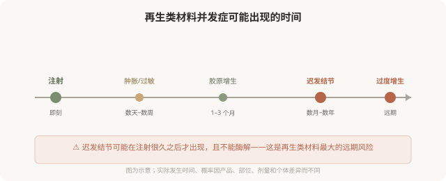
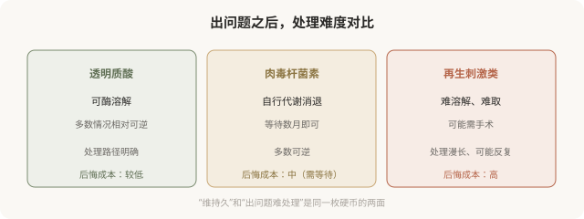

先说结论：再生类材料（胶原蛋白刺激剂）的并发症可能在注射后数月甚至数年才出现，表现为迟发性结节、肉芽肿、局部过度增生等。因为这类材料不能像透明质酸那样酶解，一旦出现问题，处理往往复杂、漫长，有时需要手术或长期干预。这就是“维持久”的代价，它的不可撤回性不仅体现在效果上，更体现在出问题时。理解远期风险，是选择再生类材料的前提。
迟发性结节，再生类材料特有的挑战
透明质酸的结节多与注射技术（过量、过浅）有关，且可用酶解。再生类材料的结节机制不同，它是身体对微球的免疫反应，可能在材料注入很久之后才出现。

迟发性结节的特点：
- 时间晚：注射后数月到数年才出现，不是注射后立刻能发现的问题。
- 机制不同：与生物膜、免疫反应、材料聚集等有关，不只是“打多了”。
- 处理复杂：不能酶解，可能需要激素局部注射、抗感染、手术取出，且取出往往不彻底。
- 可能反复：即使处理，也可能复发。
过度增生，另一个远期问题
再生类材料刺激胶原增生，但增生的程度不可完全预测。有些人可能在某些部位出现过度增生，比预期鼓起、轮廓异常。因为不能酶解，过度增生的处理也很困难，可能需要等待、激素注射或手术。
为什么再生类材料出问题最难处理
对比三类材料的“后悔路径”：

降低远期风险的几个原则
- 正规产品：注册证可查，不接受来路不明。
- 有经验的医生：再生类材料对配制、注射层次、剂量分布要求高。
- 剂量克制：再生类材料不宜过度填充，宁可分次。
- 避免高危区域滥用：某些部位（如唇部、眼周薄皮肤区）的结节风险更高，需医生判断。
- 保留注射记录：产品、批号、部位、剂量，便于远期出现问题时溯源。
出现结节怎么办
如果注射后数月或数年出现结节、硬块、不明增生：
- 尽快联系有并发症处理经验的医生，不要自行按摩、热敷或反复针挑。
- 带上注射记录：产品、批号、时间、剂量、操作者。
- 影像评估：高频超声等可帮助判断材料分布和结节性质。
- 区分性质：是炎症、感染、过敏、肉芽肿还是过度增生，处理方式不同。
- 分阶段处理：可能需要抗炎、激素局部注射、手术等综合手段。
重要：不要在问题未稳定时继续叠加注射“压平”结节，这可能让问题层次更复杂。
决策时该怎么想
面对再生类材料，问自己：
- 我能不能接受“渐进起效、数月才看到效果”？
- 我能不能接受“万一出问题，难溶解、可能要手术”？
- 我有没有先用透明质酸理解注射效果，再决定是否用再生类？
- 这个产品和医生是否正规、可追溯？
如果对“不可撤回”有任何犹豫，优先选择透明质酸这类可溶材料。再生类材料适合那些已经理解注射、能接受其特性、并选择正规产品和医生的人，它不是“初学者”的材料。
本文用于健康教育，不能替代面诊和个体化评估；再生类材料的远期并发症处理须由具备经验的医师评估。